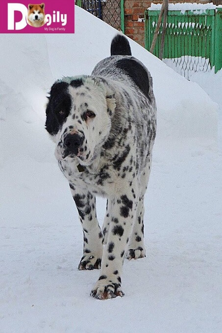

Chó Alabai hay còn được gọi chó chăn cừu Trung Á. Đây là một giống chó cổ đại, có xuất xứ từ vùng Trung Á. (khu vực các nước thuộc Liên Xô cũ). Trong lịch sử, chó Alabai được sử dụng để chăn gia súc. Ngoài ra, với thể hình lực lưỡng. Tính chiến đấu và bảo vệ cao. Chó Alabai còn được sử dụng để canh gác, bảo vệ đàn gia súc. Chúng là một trong số không nhiều loài chó có thể đấu tay đôi sòng phẳng với chó sói hoang dã. Trong quá khứ. Đôi khi chó alabai còn dùng trong các cuộc chọi chó.
Mặc dù là một giống chó lớn, mạnh mẽ. Nhưng chó Alabai lại cực kỳ thân thiện với gia chủ. Cũng như đối với đàn gia súc, gia cầm được nuôi trong gia đình. Chúng luôn có ý thức, cảnh giác để bảo vệ các thành viên trong gia đình. Nhưng bạn cũng cần lưu ý không để Alabai chơi một mình với trẻ em trong nhà.Nếu được huấn luyện, dạy bảo chu đáo bởi những chủ nhân có kinh nghiệm. Chó chăn cừu Trung Á sẽ là một trong những giống chó bảo vệ tốt nhất.
Mặc dù là một giống chó lớn, mạnh mẽ. Nhưng chó Alabai lại cực kỳ thân thiện với gia chủ. Cũng như đối với đàn gia súc, gia cầm được nuôi trong gia đình. Chúng luôn có ý thức, cảnh giác để bảo vệ các thành viên trong gia đình. Nhưng bạn cũng cần lưu ý không để Alabai chơi một mình với trẻ em trong nhà.Nếu được huấn luyện, dạy bảo chu đáo bởi những chủ nhân có kinh nghiệm. Chó chăn cừu Trung Á sẽ là một trong những giống chó bảo vệ tốt nhất.